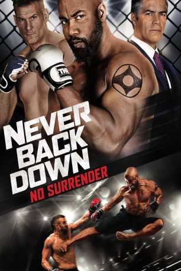

IMDB-Wertung: 6.4 / 10
IMDB-Wertung: 6.4 / 10  Metascore:
Metascore: 
Picking up after the events of Never Back Down 2, former MMA champion Case Walker is on the comeback trail to become champion once again.
WEBHDRIP DUBBED
Alternativ: Never Back Down: No Surrender
 IMDB-Wertung: 6.4 / 10 Metascore:
Picking up after the events of Never Back Down 2, former MMA champion Case Walker is on the comeback trail to become champion once again.
WEBHDRIP DUBBED
Jahr: 2016
Dauer: 101 Minuten
FSK: 16
Land: USA Studio: Sony Pictures Home EntertainmentTonspuren: DD5.1 - ,
Untertitel: Deutsch, Englisch,
Auflösung: 1080p (1916x1076) Größe: 4198 MB
Genre: Action
Regisseur:  Michael Jai White
Michael Jai White
Drehbuch: David Dorfman
Soundtrack:
Darsteller:
 Michael Jai White als Case Walker
Michael Jai White als Case Walker Esai Morales als Hugo Vega
Esai Morales als Hugo Vega Nathan Jones als Caesar Braga
Nathan Jones als Caesar Braga JeeJa Yanin als Jeeja - Gym Fighter Girl
JeeJa Yanin als Jeeja - Gym Fighter Girl Ron Smoorenburg als Case's 1st Fight Opponent
Ron Smoorenburg als Case's 1st Fight Opponent Tony Jaa als Himself
Tony Jaa als Himself Sahajak Boonthanakit als Joe Kanarot
Sahajak Boonthanakit als Joe Kanarot Eoin O'Brien als Cobra O'Conor
Eoin O'Brien als Cobra O'ConorDatei: X:\3-Trilogie(A-F)\Fighters\Fighters 3 No Surrender, The (2016, FSK16, 1916x1076).mkv seit 17.06.2016
Festplatte: HD Collection-2(A-Z)-3(A-M)
 Alle Filme aus Gruppe '3-Trilogie(A-F)\Fighters'
Alle Filme aus Gruppe '3-Trilogie(A-F)\Fighters'